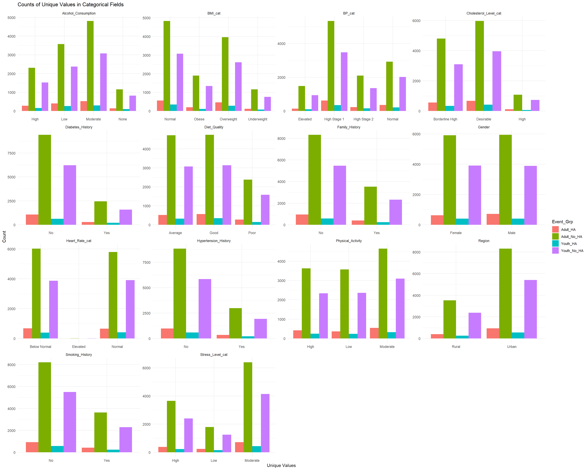
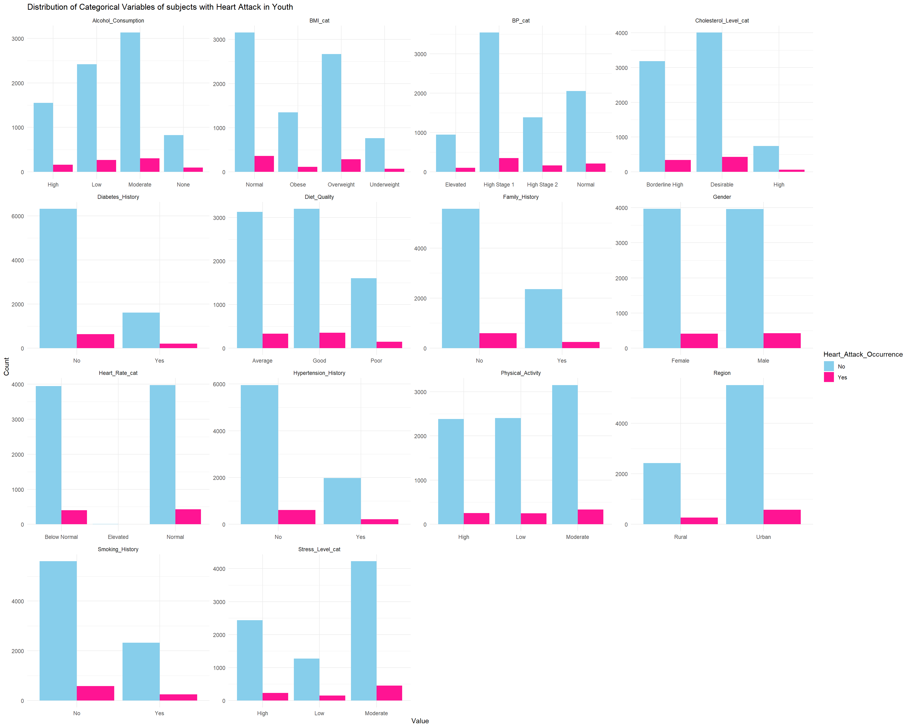
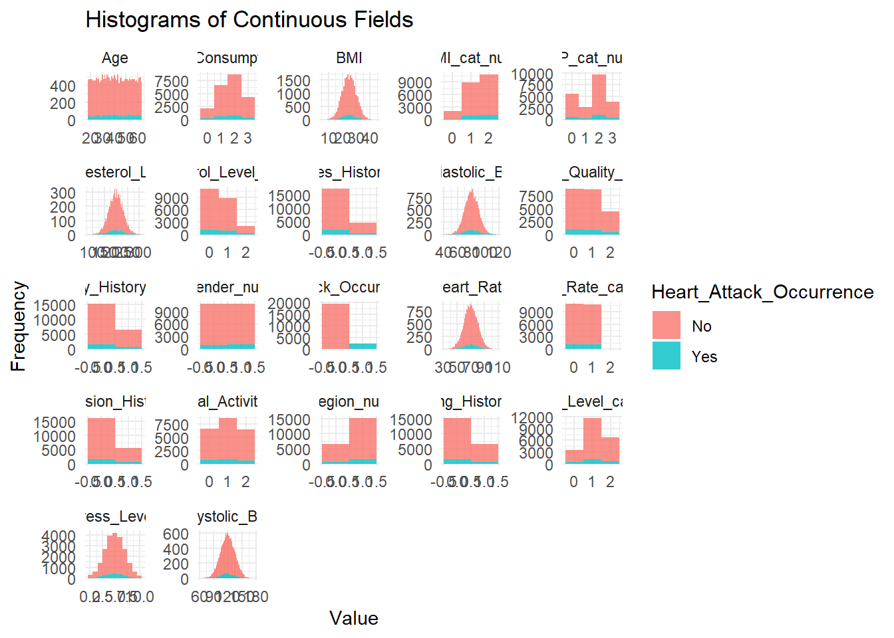
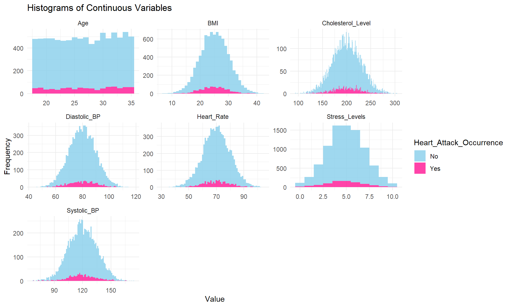
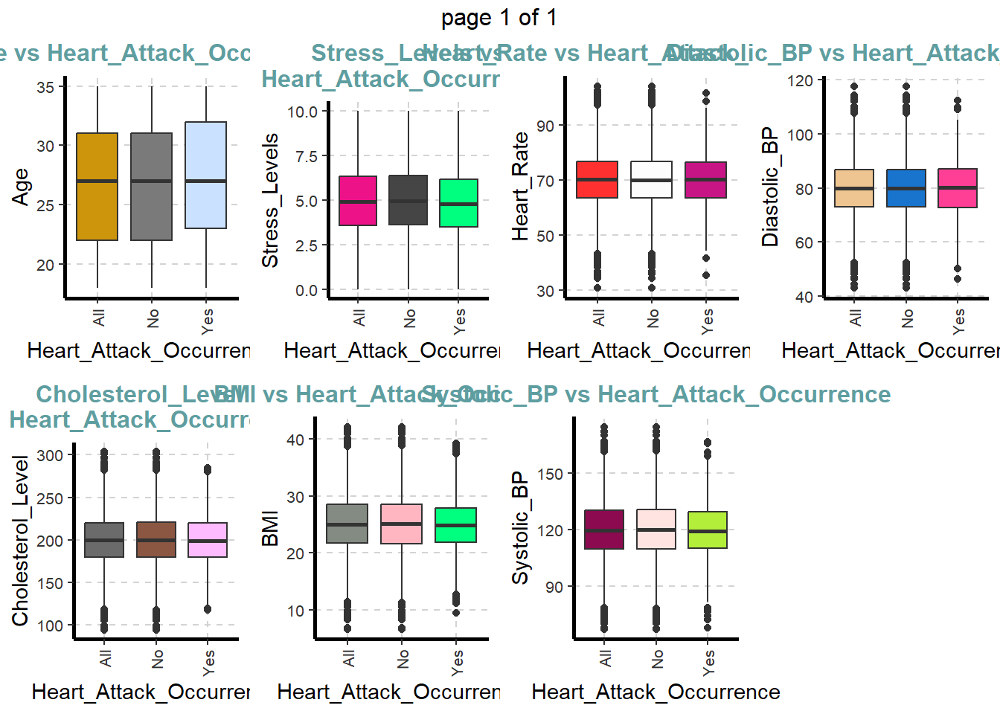

pacman::p_load(haven, SmartEDA, tidyverse, tidymodels, ggdist, ggridges, ggthemes,
colorspace, gridExtra, ggstatsplot, GGally,
readxl, performance, parameters, see)Take-Home Exercise 01
Take Home Exercise 01
This quota document shows the visual analytics conducted for the Take Home Exercise 01, The data set chosen is the Heart Attack in Japan Youth Vs Adult from Kaggle.
Tasks Required
The main task is to develop graphical visuals for a media company on an article for the possible factor leading to heart attack trend in Japanese Youth.
The plan is to carry out exploratory and confirmatory data analysis to confirm the observed trend before doing up the visuals required for the graphic.
Loading of Packages
The following code chunk indicate the list of packages used for this Take Home Exercise 01
Loading of Data
As the data is in csv format, the data is loaded using read_csv function.
heart <- read_csv("data/Ex01/japan_heart_attack_dataset.csv")Data Preparation
summary and head functions are used to view and examin the data type before further processing is carried out.
summary(heart) Age Gender Region Smoking_History
Min. :18.00 Length:30000 Length:30000 Length:30000
1st Qu.:33.00 Class :character Class :character Class :character
Median :48.00 Mode :character Mode :character Mode :character
Mean :48.49
3rd Qu.:64.00
Max. :79.00
Diabetes_History Hypertension_History Cholesterol_Level Physical_Activity
Length:30000 Length:30000 Min. : 80.02 Length:30000
Class :character Class :character 1st Qu.:179.55 Class :character
Mode :character Mode :character Median :199.77 Mode :character
Mean :199.90
3rd Qu.:220.16
Max. :336.86
Diet_Quality Alcohol_Consumption Stress_Levels BMI
Length:30000 Length:30000 Min. : 0.000 Min. : 5.58
Class :character Class :character 1st Qu.: 3.644 1st Qu.:21.63
Mode :character Mode :character Median : 4.993 Median :24.96
Mean : 5.002 Mean :25.00
3rd Qu.: 6.353 3rd Qu.:28.36
Max. :10.000 Max. :46.10
Heart_Rate Systolic_BP Diastolic_BP Family_History
Min. : 30.03 Min. : 56.23 Min. : 39.95 Length:30000
1st Qu.: 63.25 1st Qu.:109.79 1st Qu.: 73.26 Class :character
Median : 69.95 Median :119.90 Median : 80.12 Mode :character
Mean : 69.98 Mean :119.91 Mean : 80.03
3rd Qu.: 76.66 3rd Qu.:130.02 3rd Qu.: 86.76
Max. :108.78 Max. :178.77 Max. :117.67
Heart_Attack_Occurrence Extra_Column_1 Extra_Column_2
Length:30000 Min. :0.000007 Min. :0.0000052
Class :character 1st Qu.:0.253308 1st Qu.:0.2473606
Mode :character Median :0.500820 Median :0.4961980
Mean :0.501939 Mean :0.4978940
3rd Qu.:0.750529 3rd Qu.:0.7473954
Max. :0.999965 Max. :0.9999894
Extra_Column_3 Extra_Column_4 Extra_Column_5 Extra_Column_6
Min. :0.0000227 Min. :0.0000934 Min. :0.000105 Min. :0.0000531
1st Qu.:0.2483093 1st Qu.:0.2522110 1st Qu.:0.251803 1st Qu.:0.2559989
Median :0.4976104 Median :0.4976175 Median :0.501987 Median :0.5017726
Mean :0.4981949 Mean :0.5005952 Mean :0.501410 Mean :0.5027631
3rd Qu.:0.7476807 3rd Qu.:0.7505662 3rd Qu.:0.753657 3rd Qu.:0.7511886
Max. :0.9999694 Max. :0.9999869 Max. :0.999995 Max. :0.9998892
Extra_Column_7 Extra_Column_8 Extra_Column_9
Min. :0.0000678 Min. :0.0000449 Min. :0.0000305
1st Qu.:0.2482839 1st Qu.:0.2509790 1st Qu.:0.2502452
Median :0.4988157 Median :0.4985698 Median :0.4984491
Mean :0.4980753 Mean :0.5003557 Mean :0.5002292
3rd Qu.:0.7456378 3rd Qu.:0.7507293 3rd Qu.:0.7512186
Max. :0.9999900 Max. :0.9999300 Max. :0.9999852
Extra_Column_10 Extra_Column_11 Extra_Column_12
Min. :0.0000133 Min. :0.0000008 Min. :0.0000713
1st Qu.:0.2484256 1st Qu.:0.2538092 1st Qu.:0.2505341
Median :0.5031040 Median :0.5067589 Median :0.5038609
Mean :0.5010694 Mean :0.5044949 Mean :0.5008624
3rd Qu.:0.7522686 3rd Qu.:0.7556257 3rd Qu.:0.7511780
Max. :0.9999928 Max. :0.9999578 Max. :0.9999484
Extra_Column_13 Extra_Column_14 Extra_Column_15
Min. :0.0000204 Min. :0.0000025 Min. :0.0000241
1st Qu.:0.2473108 1st Qu.:0.2482152 1st Qu.:0.2482573
Median :0.5041162 Median :0.4943841 Median :0.5009406
Mean :0.5004557 Mean :0.4976507 Mean :0.4999634
3rd Qu.:0.7497094 3rd Qu.:0.7456212 3rd Qu.:0.7487379
Max. :0.9999451 Max. :0.9999779 Max. :0.9999913 head (heart)# A tibble: 6 × 32
Age Gender Region Smoking_History Diabetes_History Hypertension_History
<dbl> <chr> <chr> <chr> <chr> <chr>
1 56 Male Urban Yes No No
2 69 Male Urban No No No
3 46 Male Rural Yes No No
4 32 Female Urban No No No
5 60 Female Rural No No No
6 25 Female Rural No No No
# ℹ 26 more variables: Cholesterol_Level <dbl>, Physical_Activity <chr>,
# Diet_Quality <chr>, Alcohol_Consumption <chr>, Stress_Levels <dbl>,
# BMI <dbl>, Heart_Rate <dbl>, Systolic_BP <dbl>, Diastolic_BP <dbl>,
# Family_History <chr>, Heart_Attack_Occurrence <chr>, Extra_Column_1 <dbl>,
# Extra_Column_2 <dbl>, Extra_Column_3 <dbl>, Extra_Column_4 <dbl>,
# Extra_Column_5 <dbl>, Extra_Column_6 <dbl>, Extra_Column_7 <dbl>,
# Extra_Column_8 <dbl>, Extra_Column_9 <dbl>, Extra_Column_10 <dbl>, …Check for missing values.
colSums(is.na(heart)) Age Gender Region
0 0 0
Smoking_History Diabetes_History Hypertension_History
0 0 0
Cholesterol_Level Physical_Activity Diet_Quality
0 0 0
Alcohol_Consumption Stress_Levels BMI
0 0 0
Heart_Rate Systolic_BP Diastolic_BP
0 0 0
Family_History Heart_Attack_Occurrence Extra_Column_1
0 0 0
Extra_Column_2 Extra_Column_3 Extra_Column_4
0 0 0
Extra_Column_5 Extra_Column_6 Extra_Column_7
0 0 0
Extra_Column_8 Extra_Column_9 Extra_Column_10
0 0 0
Extra_Column_11 Extra_Column_12 Extra_Column_13
0 0 0
Extra_Column_14 Extra_Column_15
0 0 As the metadata did not specify the data is of the extra columns hence we will not be able the data in the “Extra_column 1 to 15”
The first step of data preparation is to remove them first.
HA <- heart %>% select (1:17)After removing the Extra columns, we continue by examining the data using the summary and head (HA) function.
summary(HA) Age Gender Region Smoking_History
Min. :18.00 Length:30000 Length:30000 Length:30000
1st Qu.:33.00 Class :character Class :character Class :character
Median :48.00 Mode :character Mode :character Mode :character
Mean :48.49
3rd Qu.:64.00
Max. :79.00
Diabetes_History Hypertension_History Cholesterol_Level Physical_Activity
Length:30000 Length:30000 Min. : 80.02 Length:30000
Class :character Class :character 1st Qu.:179.55 Class :character
Mode :character Mode :character Median :199.77 Mode :character
Mean :199.90
3rd Qu.:220.16
Max. :336.86
Diet_Quality Alcohol_Consumption Stress_Levels BMI
Length:30000 Length:30000 Min. : 0.000 Min. : 5.58
Class :character Class :character 1st Qu.: 3.644 1st Qu.:21.63
Mode :character Mode :character Median : 4.993 Median :24.96
Mean : 5.002 Mean :25.00
3rd Qu.: 6.353 3rd Qu.:28.36
Max. :10.000 Max. :46.10
Heart_Rate Systolic_BP Diastolic_BP Family_History
Min. : 30.03 Min. : 56.23 Min. : 39.95 Length:30000
1st Qu.: 63.25 1st Qu.:109.79 1st Qu.: 73.26 Class :character
Median : 69.95 Median :119.90 Median : 80.12 Mode :character
Mean : 69.98 Mean :119.91 Mean : 80.03
3rd Qu.: 76.66 3rd Qu.:130.02 3rd Qu.: 86.76
Max. :108.78 Max. :178.77 Max. :117.67
Heart_Attack_Occurrence
Length:30000
Class :character
Mode :character
head (HA)# A tibble: 6 × 17
Age Gender Region Smoking_History Diabetes_History Hypertension_History
<dbl> <chr> <chr> <chr> <chr> <chr>
1 56 Male Urban Yes No No
2 69 Male Urban No No No
3 46 Male Rural Yes No No
4 32 Female Urban No No No
5 60 Female Rural No No No
6 25 Female Rural No No No
# ℹ 11 more variables: Cholesterol_Level <dbl>, Physical_Activity <chr>,
# Diet_Quality <chr>, Alcohol_Consumption <chr>, Stress_Levels <dbl>,
# BMI <dbl>, Heart_Rate <dbl>, Systolic_BP <dbl>, Diastolic_BP <dbl>,
# Family_History <chr>, Heart_Attack_Occurrence <chr>It was observed that the data consist two main types: namely continous and categorical. The following steps we will examine the distibution of the each type of data in details.
Visualising of categorical Data
The aim of this task is to examine if there are any trends in categorical data in the occurance of heart attack in Japnaese population.
The code below is extract our the categorical data and summarise into the occurance of heart attack
categorical_columns <- HA %>% select(where(~is.character(.x) || is.factor(.x)))
count_occurrences <- categorical_columns %>%
pivot_longer(-Heart_Attack_Occurrence, names_to = "Category", values_to = "Value") %>%
group_by(Category, Value, Heart_Attack_Occurrence) %>%
summarise(Occurrences = n(), .groups = 'drop')
print(count_occurrences)# A tibble: 44 × 4
Category Value Heart_Attack_Occurrence Occurrences
<chr> <chr> <chr> <int>
1 Alcohol_Consumption High No 5243
2 Alcohol_Consumption High Yes 585
3 Alcohol_Consumption Low No 8177
4 Alcohol_Consumption Low Yes 921
5 Alcohol_Consumption Moderate No 10913
6 Alcohol_Consumption Moderate Yes 1146
7 Alcohol_Consumption None No 2703
8 Alcohol_Consumption None Yes 312
9 Diabetes_History No No 21569
10 Diabetes_History No Yes 2334
# ℹ 34 more rows# Create bar plots for each categorical field
bar_plots <- count_occurrences %>%
ggplot(aes(x = Value, y = Occurrences, fill = Heart_Attack_Occurrence)) +
geom_bar(stat = "identity", position = position_dodge()) + # Use position_dodge for side-by-side bars
facet_wrap(~ Category, scales = "free") +
theme_minimal() +
labs(title = "Counts of Unique Values in Categorical Fields",
x = "Unique Values",
y = "Count")
# Print the bar plots
print(bar_plots)closer examination of categorical trend for those with heart attack
count_occurrences_yes <- filter(count_occurrences, Heart_Attack_Occurrence == "Yes")
# Create bar plots for each categorical field
bar_plots <- count_occurrences_yes %>%
ggplot(aes(x = Value, y = Occurrences, )) +
geom_bar(stat = "identity", position = position_dodge()) + # Use position_dodge for side-by-side bars
facet_wrap(~ Category, scales = "free") +
theme_minimal() +
labs(title = "Counts of Unique Values in Categorical Fields",
x = "Unique Values",
y = "Count")
# Print the bar plots
print(bar_plots)pm <- ggpairs(HA, columns = 1:17, ggplot2::aes(colour = Heart_Attack_Occurrence ))
print (pm)visualising continuous data
# Select only the continuous columns (numeric)
continuous_columns <- HA %>% select(where(is.numeric), Heart_Attack_Occurrence)
b<-continuous_columns %>%
pivot_longer(cols = -Heart_Attack_Occurrence, names_to = "Field", values_to = "Value")# Create histograms with density plots for continuous variables
histograms <- ggplot(b, aes(x = Value, fill = Heart_Attack_Occurrence )) +
geom_histogram(binwidth = 1, alpha = 0.8) +
theme_minimal() +
labs(title = "Histograms of Continuous Fields", x = "Value", y = "Frequency")+
facet_wrap(~ Field, scales = "free")
# Print the histograms
print(histograms)visualising using density plot
# Adding density plot
ggplot(HA, aes(x = Stress_Levels)) +
geom_histogram(aes(y = ..density..), binwidth = 1, fill = "blue", alpha = 0.5) +
geom_density(color = "red", size = 1) +
labs(title = "Histogram and Density Plot of Stress Levels", x = "Stress Levels", y = "Density")
ggplot(HA, aes(x = Stress_Levels, fill = Heart_Attack_Occurrence)) + # Map fill to Heart_Attack_Occurrence
geom_histogram(aes(y = ..density..), binwidth = 1, alpha = 0.5, position = "identity") + # Adjust position for overlap
geom_density(color = "red", size = 1, alpha = 0.3) + # Density plot with transparency
labs(title = "Histogram and Density Plot of Stress Levels",
x = "Stress Levels",
y = "Density") +
theme_minimal(base_size = 14) + # Improve overall theme and font size
scale_fill_brewer(palette = "Set2", name = "Heart Attack Occurrence") + # Use a color palette for filling
theme(legend.position = "top") # Position the legend at the top# Create individual boxplots for each continuous field
individual_boxplots <-
ggplot(b, aes(x = Field, y = Value, fill = Heart_Attack_Occurrence)) +
geom_boxplot() +
facet_wrap(~ Field, scales = "free") +
theme_minimal() +
labs(title = "Boxplots of Continuous Fields",
x = "Field",
y = "Value")
# Print the individual boxplots
print(individual_boxplots)HA_Yes <- filter(HA, Heart_Attack_Occurrence == "Yes")HA_No <- filter(HA, Heart_Attack_Occurrence == "No")summary(HA_Yes) Age Gender Region Smoking_History
Min. :18.00 Length:2964 Length:2964 Length:2964
1st Qu.:34.00 Class :character Class :character Class :character
Median :49.00 Mode :character Mode :character Mode :character
Mean :48.78
3rd Qu.:64.00
Max. :79.00
Diabetes_History Hypertension_History Cholesterol_Level Physical_Activity
Length:2964 Length:2964 Min. : 98.46 Length:2964
Class :character Class :character 1st Qu.:179.79 Class :character
Mode :character Mode :character Median :200.08 Mode :character
Mean :199.79
3rd Qu.:220.28
Max. :311.24
Diet_Quality Alcohol_Consumption Stress_Levels BMI
Length:2964 Length:2964 Min. : 0.000 Min. : 9.435
Class :character Class :character 1st Qu.: 3.576 1st Qu.:21.743
Mode :character Mode :character Median : 4.955 Median :24.856
Mean : 4.929 Mean :24.919
3rd Qu.: 6.251 3rd Qu.:28.085
Max. :10.000 Max. :42.630
Heart_Rate Systolic_BP Diastolic_BP Family_History
Min. : 34.36 Min. : 65.71 Min. : 44.30 Length:2964
1st Qu.: 63.33 1st Qu.:109.61 1st Qu.: 73.24 Class :character
Median : 70.31 Median :119.56 Median : 80.19 Mode :character
Mean : 70.14 Mean :119.67 Mean : 80.16
3rd Qu.: 76.80 3rd Qu.:130.14 3rd Qu.: 87.01
Max. :103.33 Max. :171.81 Max. :113.85
Heart_Attack_Occurrence
Length:2964
Class :character
Mode :character
ggplot(data=HA,
aes(x = Alcohol_Consumption, y = Cholesterol_Level, color =Gender )) +
geom_boxplot()+
facet_wrap(~ Heart_Attack_Occurrence)
ggplot(data=HA_Yes,
aes(x = Diet_Quality, y = BMI, color = Gender)) +
geom_boxplot()+
facet_wrap(~ Region)
ggplot(data=HA_No,
aes(x = Diet_Quality, y = BMI, color = Gender)) +
geom_boxplot()+
facet_wrap(~ Region)ggplot(HA_Yes,
aes(x = Diet_Quality, y = BMI)) +
stat_halfeye(adjust = 0.1,
justification = -0.4,
.width = -0.1,
point_colour = NA,
size=0.01) +
geom_boxplot(width = .10,
outlier.shape = NA) +
stat_dots(side = "left",
justification = 1.2,
binwidth = .5,
dotsize = .4)
scatter_plot <- ggplot(HA, aes(x = Cholesterol_Level, y = BMI, color = Heart_Attack_Occurrence)) +
geom_point(size = 2, alpha = 0.5) + # Adjust point size and transparency
labs(title = "Scatter Plot of Stress Levels vs. BMI",
x = "Stress Levels",
y = "BMI",
color = "Heart Attack Occurrence") + # Add title and labels
theme_minimal(base_size = 14) + # Use a clean theme with larger base font size
scale_color_manual(values = c("blue", "red")) # Customize colors if needed
# Print the scatter plot
print(scatter_plot)
# Step 1: Select only continuous (numeric) columns along with Heart_Attack_Occurrence
continuous_columns <- HA %>%
select(where(is.numeric), Heart_Attack_Occurrence)
# Step 2: Reshape the data to long format
long_data <- continuous_columns %>%
pivot_longer(-Heart_Attack_Occurrence, names_to = "Variable", values_to = "Value")
# Step 3: Create scatter plots for each continuous variable against Heart_Attack_Occurrence
scatter_plot <- ggplot(long_data, aes(x = Value, y = as.numeric(Heart_Attack_Occurrence), color = Heart_Attack_Occurrence)) +
geom_point(alpha = 0.7, size = 2) + # Adjust point size and transparency
facet_wrap(~ Variable, scales = "free") + # Create facets for each variable
labs(title = "Scatter Plots of Continuous Variables by Heart Attack Occurrence",
x = "Value",
y = "Heart Attack Occurrence (0 = No, 1 = Yes)") + # y-axis represents occurrence
theme_minimal(base_size = 14) + # Clean theme
scale_color_manual(values = c("blue", "red")) # Customize colors for heart attack occurrence
# Print the scatter plots
print(scatter_plot)
# Print the scatter plots
print(scatter_plot)Inspiration
ggplot(HA, aes(x = Smoking_History, fill = Heart_Attack_Occurrence)) +
geom_bar(position = "fill") +
labs(title = "Smoking History vs Heart Attack Occurrence",
y = "Proportion",
x = "Smoking History") +
scale_fill_manual(values = c("lightblue", "salmon"), name = "Heart Attack Occurrence")ggbetweenstats(
data = HA,
x = Heart_Attack_Occurrence,
y = Stress_Levels,
type = "p",
mean.ci = TRUE,
pairwise.comparisons = TRUE,
pairwise.display = "s",
p.adjust.method = "fdr",
messages = FALSE
)::: callout note
The very small effect size (Hedges’ g = 0.04) suggests that although the difference is statistically significant, it may not be practically relevant. In other words, the difference in means may not be large enough to have meaningful implications in a real-world context. :::
Model building
##model <- lm(Heart_Attack_Occurrence ~ Age + Cholesterol_Level + BMI + Heart_Rate, data = HA)
#model# Check for missing values
na_count <- sum(is.na(HA$Heart_Attack_Occurrence))
cat("Number of missing values in Heart_Attack_Occurrence:", na_count, "\n")Number of missing values in Heart_Attack_Occurrence: 0 unique(HA$Heart_Attack_Occurrence)[1] "No" "Yes"Conclusion:
The health crsis of heart attack is largely depended on the possibility